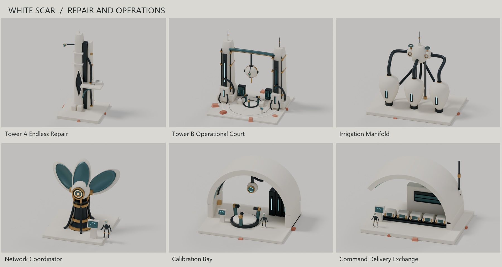
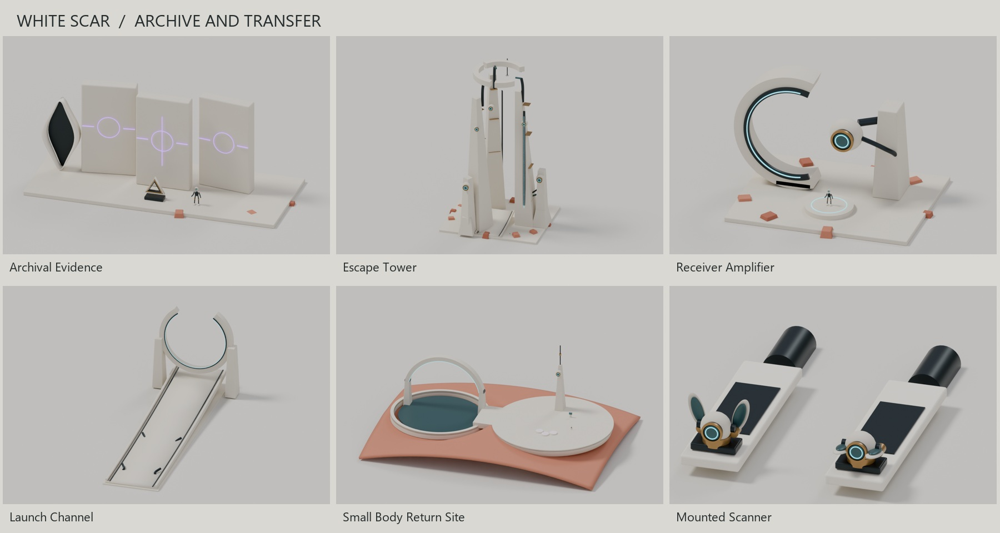
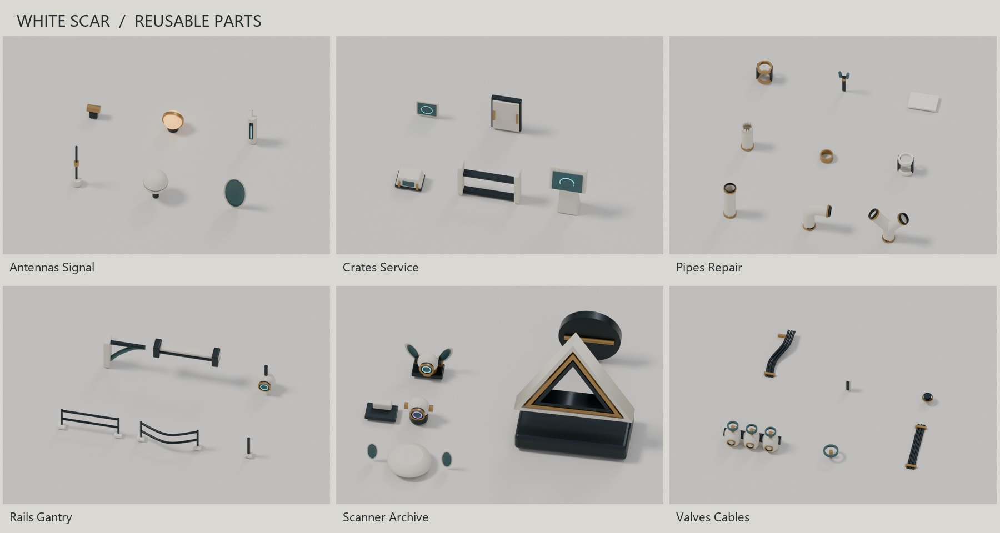

UPLOAD COMPUTER / SERVER LOG
Back to the logupdate
Machinery still waiting
Upload archive: 12 structure assemblies and 40 reusable parts explore White Scar's ancient infrastructure. Receiver acknowledgement pending.
From development on 2026-09-26 · logged 22 Nov 2026

- Repair towers, calibration bays and delivery queues suggest machines continuing their duties long after their builders vanished.
- Intended gameplay roles connect scanner-led discovery, operational towers, an Escape Tower amplifier and launch channel, then a small-body return site.
- Archival panels use symbols and an empty recess to suggest missing inhabitants, leaving room for discovery.
- Ivory shells, exposed dark machinery and distinctive open silhouettes make each purpose readable. Shared pipes, hinges and consoles tie the kit together.
These are WIP 3D mockups, exploring proportions and function before final art and integration.

